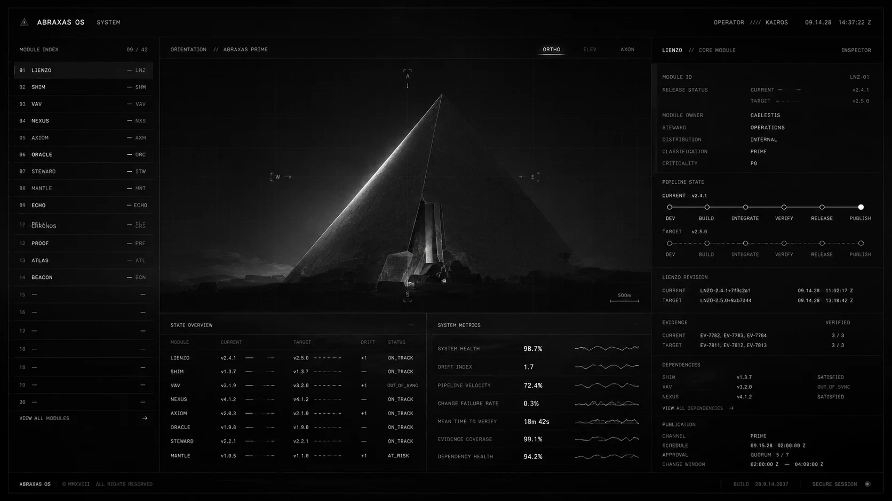
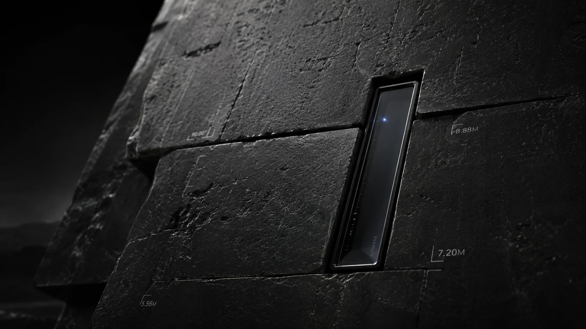

ALTA DIRECCIÓN & GOBERNANZA
Control Total para CEOs y Directores.
Control Total para CEOs y Directores.
Cero Caos Operativo.
🛡️ CUSTODIA INMUTABLE DE MARCA
Criterio Blindado y Anti-Deriva
Fijas tus pilares de autoridad, tono de voz y reglas una sola vez. Ningún colaborador puede publicar contenido fuera de compliance.

📊 TELEMETRÍA DE COSTOS SQLITE
Auditoría al Centavo y Tiempos
Tablas relacionales que miden tiempos por etapa, cuellos de botella del equipo y el costo de manufactura exacto por activo.

⚡ APALANCAMIENTO 1 = 10
1 Operador = Una Agencia Entera
Elimina retainers de agencias de $5,000–$15,000/mes. Un solo líder gobierna y aprueba 50 a 100 piezas multicanal en una tarde.

🔒 PRIVACIDAD EN APPLE SILICON
100% Silicio Apple Local
Todo corre en local en tu Mac. Tus estrategias confidenciales y grabaciones jamás se suben a servidores externos ni entrenan IA de terceros.